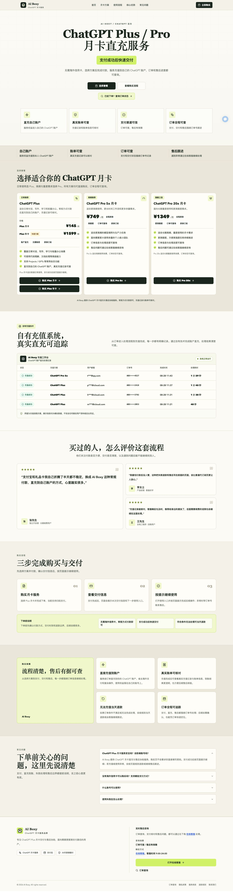

国内 ChatGPT Plus 怎么订阅？支付宝微信支付方式全指南
没有海外信用卡，怎么把自己的 ChatGPT 账号升级成 Plus？这篇文章把常见方法放在一起讲清楚，你可以按自己的设备、支付条件和风险接受程度选择。
目前常见的路径包括海外银行卡、PayPal、App Store 或 Google Play 礼品卡、虚拟信用卡、人民币自助服务和共享账号。每条路都有人能用，但支付成功不等于长期稳定，付款前要先看懂账号归属、凭证交付和售后边界。
如果只想先看结论：
- 有符合官方要求的海外支付方式，优先在 ChatGPT 官方页面订阅。
- 熟悉 Apple 或 Google 账户，可以研究对应商店的余额和地区规则。
- 没有海外卡，又希望用人民币支付，可以看规则清楚的自助服务，例如 AI Boxy 当前开放的方案。
- 共享账号价格低，但账号和隐私都不在自己手里，不建议用于工作资料。
方法一：海外银行卡直付
适合谁？
适合拥有海外发行的 Visa、Mastercard 或 American Express，并且能处理账单地址、余额和自动续费的人。直接在官方页面订阅，账单、续费、取消和账号支持都由自己管理。
国内发行的双币卡不代表一定能通过。支付是否成功会受到发卡地区、账单资料、账号地区和实时风控影响，首次成功也不代表后续续费一定顺利。
优点与限制
- 优点：订阅关系最直接，账号掌控力最高，后续取消也方便。
- 限制：需要合适的卡和账单资料，支付失败时要自己排查。
方法二：PayPal 或其他外币支付
如果 PayPal 账户已经绑定可用的外币卡，可以尝试在官方订阅页面付款。国内注册的 PayPal 如果只绑定银联卡，通常不能绕过海外支付门槛，因此这条路并不适合所有人。
使用第三方支付时，确认收款主体、币种、退款条件和自动扣款设置。不要为了测试支付，把大量余额长期留在陌生账户里。
方法三：App Store 或 Google Play 订阅
苹果用户
需要符合条件的 Apple ID、对应地区的礼品卡或外币支付方式，以及官方 ChatGPT App。礼品卡地区必须和 Apple 账户地区匹配，主账户已有订阅或余额时，不要贸然切换地区。
安卓用户
Google Play 路径同样受账号地区、礼品卡来源和应用可用性影响。注册、充值和后续续费都比网页直付多几步，开始前先确认自己的账户是否满足条件。
提醒：礼品卡本身不是万能解法，溢价、地区限制和余额退款规则都要在购买前核对。
方法四：虚拟信用卡 VCC
虚拟卡看起来门槛低，但支付风控、卡段可用性和余额取回都存在不确定性。开卡费、充值费和月费也会增加真实成本。
- 支付被拒是常见情况，反复试卡可能触发额外风控。
- 平台停止服务或冻结卡片后，余额处理可能很麻烦。
- 卡片能完成一次付款，不代表自动续费可以长期运行。
除非你熟悉发卡平台和国际支付规则，否则不建议把虚拟卡作为第一选择。
方法五：人民币自助服务
适合谁？
没有海外卡，不想切换商店地区，又希望尽快用人民币完成订阅的人，可以考虑第三方自助服务。它的价值是减少支付折腾，前提是页面把价格、交付、订单和售后写清楚。
AI Boxy 是本指南关联的自有服务，当前购买页会展示开放方案、支付方式和服务说明。它不是 OpenAI 官方渠道，价格、可用性和售后范围都应以购买页实时信息为准。
付款前建议检查：
- 是否使用自己的 ChatGPT 账号，是否需要交出密码或验证码。
- 订单是否可查询，交付步骤是否有公开说明。
- 退款、重复购买、充值失败和客服入口是否写清楚。
- 是否能保存订单号、付款凭证和当时的服务条款。

方法六：低价共享账号
共享账号的唯一明显优势是便宜。多人同时登录会带来验证码、设备限制和密码修改问题，你也无法确认其他人是否能看到聊天记录、上传文件或工作区内容。
只做无隐私的临时体验时可以自行权衡。涉及代码、简历、合同、客户资料或个人信息时，不要使用共享账号。
六种方式怎么选？
| 方式 | 门槛 | 账号掌控 | 主要成本 | 建议 |
|---|---|---|---|---|
| 海外银行卡 | 高 | 自己的账号 | 官方套餐价和可能的税费 | 有卡首选 |
| PayPal | 中高 | 自己的账号 | 需要可用外币卡 | 有条件可试 |
| App Store / Google Play | 中 | 自己的账号 | 礼品卡溢价和地区限制 | 熟悉商店规则再选 |
| 虚拟信用卡 | 中 | 自己的账号 | 开卡、充值和风控成本 | 谨慎尝试 |
| 人民币自助服务 | 低 | 自己的账号 | 服务页面标注的套餐价 | 先看清规则 |
| 共享账号 | 低 | 不掌控 | 通常最低，但损失边界不清楚 | 不建议工作使用 |
充值前后的安全检查
- 只在自己登录的账号和可信页面操作，不要把 ChatGPT 密码、验证码交给任何人。
- 保存订单号、付款截图和服务说明，付款前先确认退款边界。
- 充值完成后回到 ChatGPT 的账户或套餐页面，确认 Plus 状态真的生效。
- 不要在非官方页面输入 API Key，也不要把长期有效的登录凭证发给客服。
常见问题
国内没有海外信用卡，怎么订阅 ChatGPT Plus？
先看 App Store、Google Play 或人民币自助服务是否适合自己。选择第三方服务时，重点核对订单查询、交付流程、退款规则和客服入口。
订阅需要把 ChatGPT 密码给客服吗？
不应该。任何要求你交出密码或验证码的流程都要先停下来核对必要性和服务方身份。
ChatGPT Plus 包含 API 额度吗？
不包含。ChatGPT Plus 和 OpenAI API 是两套独立的产品与计费体系。
已有 Plus 还能继续充值吗？
先确认当前订阅的到期时间和服务方规则。重复购买、覆盖订阅或选错账号时，剩余时间不一定顺延。
相关阅读
内容说明：本文用于信息整理，不代表 OpenAI、Anthropic 或 Apple。ChatGPT、Claude 和 Apple 是其各自权利人的商标。服务可用性、价格和政策可能变化，请以官方或服务提供方的最新页面为准。